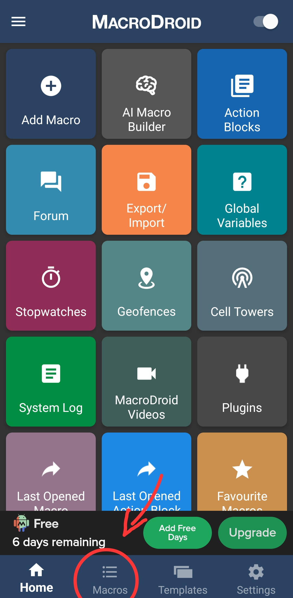
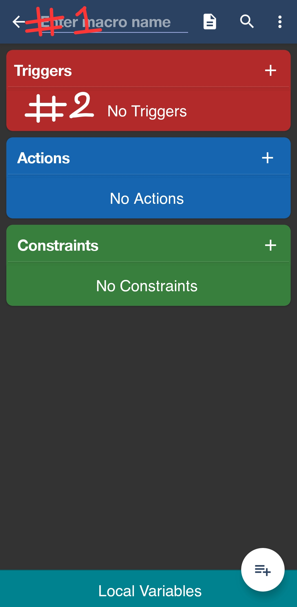
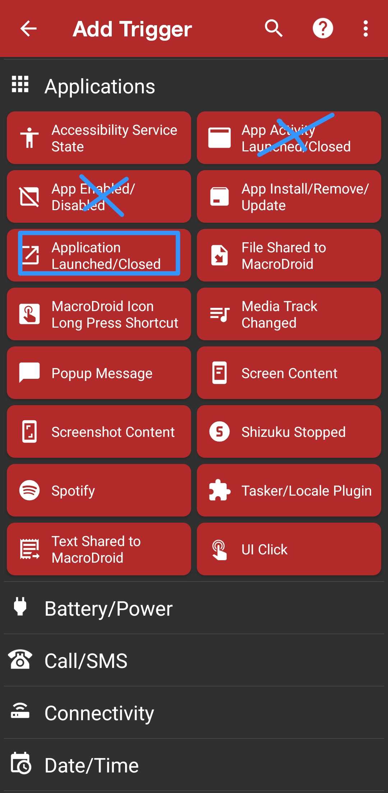
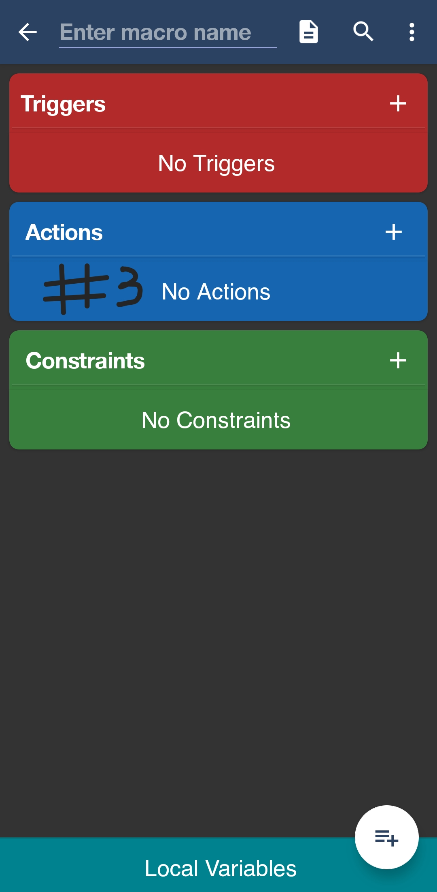
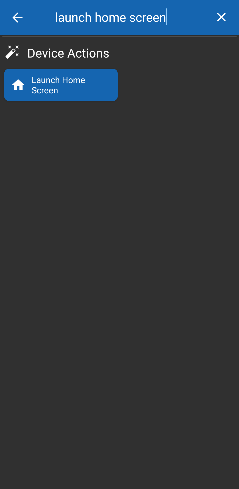

Follow this guide step-by-step to bind MacroDroid directly to Taskitator.
This macro monitors your device and immediately terminates distracting apps whenever tasks remain unfinished.
Open MacroDroid and tap the Macros tab on the bottom bar to open your macros list. Tap the floating + button (or select Add Macro from the home grid).

Fig 1: Tap Macros at the bottom bar to view and manage macros.
Tap the top text field (#1) and enter the name App Blocker. Next, tap the + button on the red Triggers card (#2).

Fig 2: Enter App Blocker at (#1) and tap the red Triggers plus button at (#2).Select Applications → Application Launched/Closed. Choose Application Launched, then select all apps you want to restrict during work hours (e.g., YouTube, Instagram, Games).

Fig 3: Tap Application Launched/Closed (ignore the crossed-out options).
Tap the + button on the blue Actions card (#3) to add your block handlers:

Fig 4: Tap the blue Actions plus button at (#3) to attach exit actions.
The cleanest, most reliable way to kick yourself out of a blocked app without lag is the Launch Home Screen action. Search for launch home screen in the action search bar to locate it instantly:

Fig 5: Under Device Actions, select Launch Home Screen.Tap the checkmark in the bottom-right corner to save your App Blocker macro.
This macro monitors your Taskitator account status in the background and automatically enables or disables the App Blocker macro.
Taskitator Cloud Bridge.http_response (Type: String).5 Minutes.Screen Unlocked.Any Network.GET.Authorization → Value: Bearer <your_copied_token>.http_response.